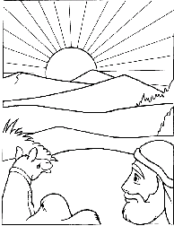

This week's lessons: Genesis 12:1-4a , Psalm 121 , Romans 4:1-5, 13-17 , John 3:1-17 or Matthew 17:1-9
This
week's lessons: Genesis
12:1-4a , Psalm
121 , Romans
4:1-5, 13-17 , John
3:1-17 or Matthew
17:1-9
Elementary School Pew-work
S B T L H L P J E S U S A H N W I T H E S E G L A O K B A K L L E T U W S E N T B Q M T H D P A T I S A T C O B O R N Q O H C S E D H O H W D C V M L T T H L E E U O W G W W Y E A F S N R R L S N N O I O B H I S U M E D O C I N J R N L O L T M W P W S K A R S N K V S J Y O J L M C C T R A A N D V M B R N I G B U R M I H W C O K N F R E R O F E B D M P K M N E O B D Y X D C W A L U L E T V K A G L O R Y P W A N E G Q O S C B T B P F R N P B R G R |
ABOVE AND BEFORE BORN CAN CERTAIN COULD FOR FROM GOD HAS JESUS JEWISH KINGDOM KNOW LEADER MAN MIRACLES MUST NAMED NICODEMUS NIGHT NOT ONE PHARISEE REPLIED SAID SEE SENT SIR TEACH TELL THAT THERE THESE UNLESS WAS WENT WERE WHO WITH WORK YOU |
John 3:1-3Jesus and Nicodemus
1There was a man named Nicodemus who was a Pharisee
and a Jewish leader. 2One night he went to Jesus and
said, "Sir, we know that God has sent you to teach us. You
could not work these miracles, unless God were with you."
|
Created with Puzzlemaker on DiscoverySchool.com http://puzzlemaker.school.discovery.com |
||
1.
Who was Nicodemus?
_____________________________________________________________
2.
What are some things we know are happening, but we cannot see?
_____________________________________________________________
3.
What are things of the Spirit we know, but we cannot see?
_____________________________________________________________
Questions taken from Lessons for Small Congregations: http://www.episcopalchurch.org
Next week's lessons: Exodus 17:1-7, Psalm 95, Romans 5:1-11, John 4:5-42
